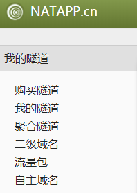
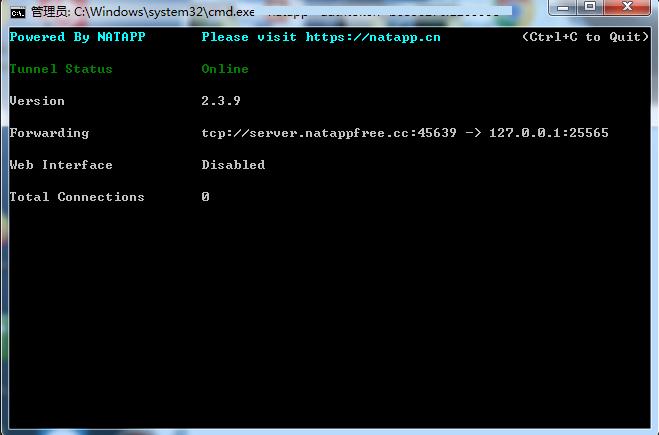

相信许多MC玩家想要在自己家中和别人联机开黑
但是如果跨网了，那怎么联机呢？
经过我3个小时仔细研究，总算成功了。
注：
1.本文是以官方服务端的1.14.2版本为例，后文部分配置项名称不一定与读者的实际名称相同，但是肯定是相似的，请自行变通。
2.本文暂无插件，mod配置教程
以下就是教程：
下载服务端：
注：本文使用的是官方服务端
根据你的需要的版本进行选择
在网页中选择你要Download的版本，进去后会有Server Jar和Client Jar两个选项
选择Server Jar下载
启动服务端：
启动：
将下载好的服务端Server.jar放在你要开服的目录下，建议为英文目录（防止程序出错）
新建一个文本文档Start.txt，复制以下代码进去
1 | @ECHO OFF |
其中-Xms1200M和-Xmx1200M分别为最大分配内存和最小分配内存，M即单位MB，当然也可以把单位改成G即单位GB。
jre8/bin/java.exe是你的java安装目录，笔者是独立放了一个java8在服务器文件夹内，如果您要使用自己电脑上默认安装的java，请依照实际填写，示例start "" "C:/Program Files/Java/jre1.8.0_241/bin/java.exe" -Xms1200M -Xmx1200M -jar server.jar
然后将Start.txt重命名为Start.bat,双击运行。
（如果你的电脑默认不显示已知文件的后缀，请到组织-文件夹和搜索选项-查看中把隐藏已知文件类型的扩展名的勾去掉并点击应用）
同意协议：
第一次启动服务端时会马上闪退，同时你的文件夹下会生成eula.txt。
这时你需要打开eula.txt，并将其中的false改为true。
注意不要打错字，是true而不是ture。
注意事项：
如果你已经准备好你的服务器地图，那么下面的配置中有关世界生成的配置项可以忽略，但是游戏模式方面的配置还是要按需修改，建议往下仔细阅读。
服务器配置：
以下配置均为服务器目录下server.properties内的配置。
只介绍用处较大的，用处较小的就自己到Minecraft Wiki看吧。
强制更改玩家游戏模式：
1 | force-gamemode=false |
false：玩家将以上次退出服务器时的游戏模式加入；
true：强制玩家每次进入时为默认游戏模式;
（默认游戏模式详见后文）
地狱生成：
1 | allow-nether=true |
false：没有地狱；
true：有地狱;
默认游戏模式：
1 | gamemode=0 |
0：生存模式；
1：创造模式;
2：冒险模式；
3：旁观模式;
踢出挂机玩家：
1 | player-idle-timeout=0 |
0：不踢出挂机玩家；
其它：单位为分钟，在达到该挂机时间时踢出该玩家;
难度：
1 | difficulty=1 |
0：和平；
1：简单;
2：普通；
3：困难;
生成怪物：
1 | spawn-monsters=true |
false：不刷怪（敌对）；
true：刷怪（敌对）;
PVP：
1 | pvp=true |
false：玩家无法互相攻击；
true：玩家可以互相攻击;
世界类型：
1 | level-type=default |
default：标准；
flat：平坦;
largebiomes：巨型生物群系；
极限模式：
就是死亡后变为旁观模式。
1 | hardcore=false |
false：关闭极限模式；
true：开启极限模式;
命令方块：
1 | enable-command-block=false |
false：禁用命令方块；
true：启用命令方块;
玩家数量限制：
1 | max-players=20 |
不解释，你懂的。
世界大小：
1 | max-world-size=29999984 |
数字为世界的最大半径，单位为方块。
服务器端口：
1 | server-port=25565 |
25565即服务器开放端口号，可以按需调整。
村民生成：
1 | spawn-npcs=true |
false：不生成村民；
true：生成村民;
世界名称：
1 | level-name=world |
默认是world，按需修改，如果是自己准备的地图，该项修改为你自己的地图名称。
可视距离：
1 | view-distance=10 |
玩家可以看到的最远距离，单位为区块。
动物生成：
1 | spawn-animals=true |
false：不生成动物；
true：生成动物;
生成建筑：
1 | generate-structures=true |
false：不生成建筑（地牢除外）；
true：生成建筑（如村庄）;
方块放置高度：
1 | max-build-height=256 |
顾名思义，不解释。
正版验证：
1 | online-mode=true |
false：关闭正版验证（玩家不需要登录正版Minecraft账号）；
true：开启正版验证（玩家需要登录正版Minecraft账号）;
注：这一点很重要，没正版一定要开false。
种子：
1 | level-seed= |
不解释，你懂的，留空则随机种子。
服务器信息：
1 | motd=A Minecraft Server |
就是那个显示在服务器名称下的信息，可以修改。
地图配置：
服务器生成：
启动服务器即可，将会按照上面的配置生成。
自定义：
将你的地图文件夹直接放在服务器目录下，名称请务必与上面的配置项一致。
做到这里，你已经可以尝试在本机上打开Minecraft进入服务器了。
服务器地址为本机局域网ip（192.168.?.?）:端口,:务必保证是英文的，中文的不行。
内网穿透：
注册：
在https://natapp.cn/上注册一个账号。
获取隧道：
注意：可能会提示要先实名认证，请实名认证后继续操作。
登录后进去点击购买隧道（其实不要钱）。

选择免费的隧道，协议我选的是TCP,UDP我没试过行不行，端口填你上面配置的服务器端口。
本地配置：
下载NATAPP客户端，是一个.exe。
打开客户端，复制该代码进去，不要按回车。
1 | natapp -authtoken= |
接着去我的隧道中，点击配置进入，复制你的authtoken到客户端，回车登录。
接着你会看到如下界面，说明配置成功。

配置完成：
把你的服务器地址及端口发给你的伙伴，他们就可以连进来了。
地址端口示例：server.natappfree.cc:45639
注：端口号每次启动NATAPP客户端都会变，请用客户端内显示的端口。
还是那句话，:必须是英文的。
赶紧试试吧！